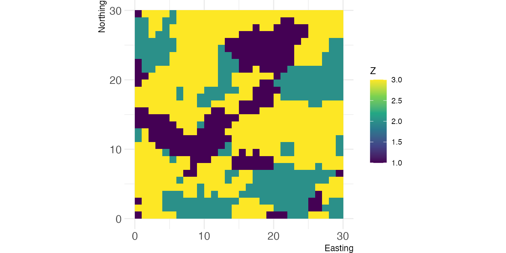
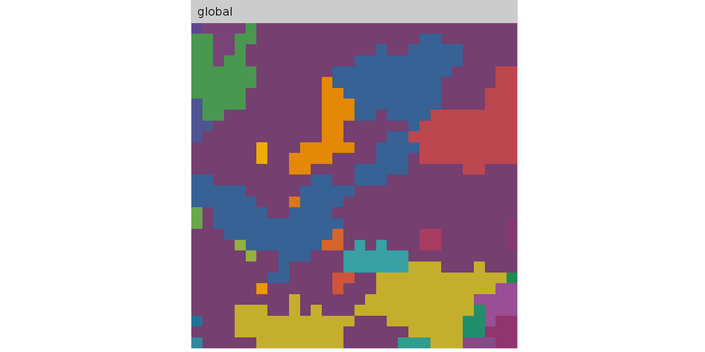
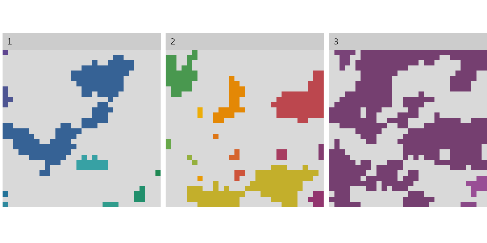
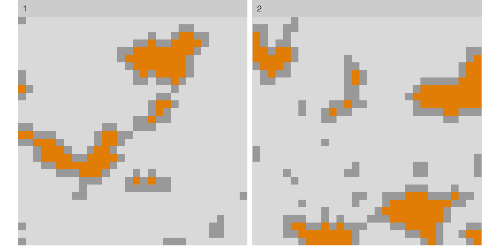
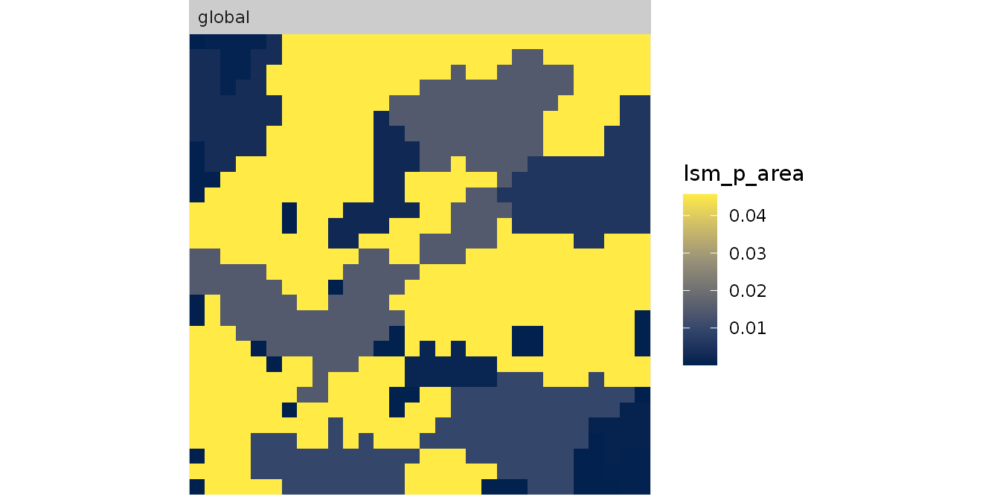
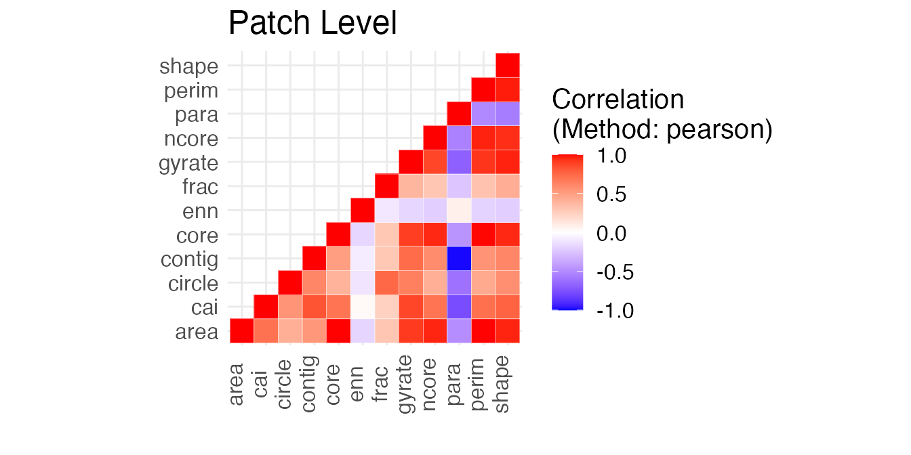

We can use the show_landscape function from landscapetools to have look at our landscape.
# Plot landscape
landscapetools::show_landscape(landscape) 
This is how we typically inspect our landscape, but which also makes it quite hard to relate to the landscape metrics we are interested in. This why we show in the following how to dissect this landscape visually into the compoments, that drive the calculation of landscape metrics.
To visualize patches in a landscape and encode each patch with an ID that can be used to compare a landscape metric with the actual landscape you can use the auxiliary visualisation function show_patches():
# Plot landscape + landscape with labeled patches
show_patches(landscape)
#> $layer_1
You can also plot all patches of each class grouped.
# show patches of all classes
show_patches(landscape, class = "all", labels = FALSE)
#> $layer_1
To show only the core area, there is the visualization function show_cores. The arguments are similar to show_patches()
# show core area of class 1 and 3
show_cores(landscape, class = c(1, 2), labels = FALSE)
#> $layer_1
Lastly, you can also “fill” the colours of each patch according to its value of a certain patch level metric, e.g. the patch area, using show_lsm(). You can chose if the label should be the patch id or the actual value of the landscape metric (label_lsm = TRUE/FALSE). To get the result as a RasterLayer, there is spatialize_lsm().
# fill patch according to area
show_lsm(landscape, what = "lsm_p_area", class = "global", label_lsm = TRUE)
#> $layer_1
Selecting meaningful landscape metrics for your field of research is difficult, as many landscape metrics are very abstract and the common approach is often simply to calculate as many as possible.
To select at the least that ones for your landscape and research question that are not highly correlated, you can use the function show_correlation() to get a first insight into the correlation of the metrics you calculated:
metrics <- calculate_lsm(landscape, what = "patch")
#> Warning: Please use 'check_landscape()' to ensure the input data is valid.
show_correlation(metrics, method = "pearson")
landscapemetrics makes internally heavy use of an connected labeling algorithm and exports an re-implementation of this algorithm (get_patches). The function return a list, where each list entry includes all patches of the corresponding class. The patches are labeld from 1…to n.
# get a list of all patches for each class
get_patches(landscape)
#> $layer_1
#> $layer_1$class_1
#> class : RasterLayer
#> dimensions : 30, 30, 900 (nrow, ncol, ncell)
#> resolution : 1, 1 (x, y)
#> extent : 0, 30, 0, 30 (xmin, xmax, ymin, ymax)
#> crs : NA
#> source : memory
#> names : layer
#> values : 1, 9 (min, max)
#>
#>
#> $layer_1$class_2
#> class : RasterLayer
#> dimensions : 30, 30, 900 (nrow, ncol, ncell)
#> resolution : 1, 1 (x, y)
#> extent : 0, 30, 0, 30 (xmin, xmax, ymin, ymax)
#> crs : NA
#> source : memory
#> names : layer
#> values : 10, 23 (min, max)
#>
#>
#> $layer_1$class_3
#> class : RasterLayer
#> dimensions : 30, 30, 900 (nrow, ncol, ncell)
#> resolution : 1, 1 (x, y)
#> extent : 0, 30, 0, 30 (xmin, xmax, ymin, ymax)
#> crs : NA
#> source : memory
#> names : layer
#> values : 24, 27 (min, max)Adjacencies are a central part for landscape metrics, so calculating them quick and in a flexible way is key for e.g. developing new metrics. Hence, landscapemetrics exports a function that can calculate adjacencies in any number if directions when provided with a binary matrix (NA / 1 - NA are cells that would be left out for looking at adjacencies).
# calculate full adjacency matrix
get_adjacencies(landscape, neighbourhood = 4)
#> $layer_1
#> 1 2 3
#> 1 520 43 137
#> 2 43 704 184
#> 3 137 184 1528
# count diagonal neighbour adjacencies
diagonal_matrix <- matrix(c(1, NA, 1,
NA, 0, NA,
1, NA, 1), 3, 3, byrow = TRUE)
get_adjacencies(landscape, diagonal_matrix)
#> $layer_1
#> 1 2 3
#> 1 466 53 167
#> 2 53 602 240
#> 3 167 240 1376
# equivalent with the raster package:
adj_raster <- function(landscape){
adjacencies <- raster::adjacent(landscape,
cells = 1:raster::ncell(landscape),
directions = 4,
pairs = TRUE)
table(landscape[adjacencies[,1]], landscape[adjacencies[,2]])
}
# compare the two implementations
bench::mark(
get_adjacencies(landscape, neighbourhood = 4),
adj_raster(landscape),
iterations = 100,
check = FALSE
)
#> # A tibble: 2 × 6
#> expression min median `itr/sec`
#> <bch:expr> <bch:tm> <bch:tm> <dbl>
#> 1 get_adjacencies(landscape, neighbourhood = 4) 247.4µs 261.2µs 3535.
#> 2 adj_raster(landscape) 7.56ms 8.34ms 117.
#> # … with 2 more variables: mem_alloc <bch:byt>, gc/sec <dbl>
adj_raster(landscape) == get_adjacencies(landscape, 4)[[1]]
#>
#> 1 2 3
#> 1 TRUE TRUE TRUE
#> 2 TRUE TRUE TRUE
#> 3 TRUE TRUE TRUElandscapemetrics implements a memory efficient and quite fast way to calculate the nearest neighbour between classes in a raster (or matrix).
# run connected labeling for podlasie raster
patches <- get_patches(landscape, class = 1)
# calculate the minimum distance between patches in a landscape
min_dist <- get_nearestneighbour(patches$layer_1$class_1)
# create a function that would do the same with the raster package
nearest_raster_fun <- function(patches) {
np_class <- patches %>%
raster::values() %>%
unique() %>%
na.omit() %>%
length()
points_class <- raster::rasterToPoints(patches) %>%
as.data.frame()
minimum_distance <- seq_len(np_class) %>%
purrr::map_dbl(function(patch_ij) {
patch_focal <- dplyr::filter(points_class, layer == patch_ij)
patch_others <-
dplyr::filter(points_class, layer != patch_ij)
minimum_distance <-
raster::pointDistance(patch_focal[1:2],
patch_others[1:2],
lonlat = FALSE) %>%
min()
})
data.frame(id = unique(sort(points_class$layer)), distance = minimum_distance)
}
# compare the two implementations
bench::mark(
get_nearestneighbour(patches$layer_1$class_1)[, 2:3],
nearest_raster_fun(patches$layer_1$class_1),
iterations = 100, check = FALSE
)
#> # A tibble: 2 × 6
#> expression min median `itr/sec`
#> <bch:expr> <bch:t> <bch:t> <dbl>
#> 1 get_nearestneighbour(patches$layer_1$class_1)[, 2:3] 4.38ms 4.93ms 196.
#> 2 nearest_raster_fun(patches$layer_1$class_1) 26.97ms 29.9ms 32.6
#> # … with 2 more variables: mem_alloc <bch:byt>, gc/sec <dbl>
# check if results are identical
get_nearestneighbour(patches$layer_1$class_1)[, 2:3] == nearest_raster_fun(patches$layer_1$class_1)
#> id dist
#> [1,] TRUE TRUE
#> [2,] TRUE TRUE
#> [3,] TRUE TRUE
#> [4,] TRUE TRUE
#> [5,] TRUE TRUE
#> [6,] TRUE TRUE
#> [7,] TRUE TRUE
#> [8,] TRUE TRUE
#> [9,] TRUE TRUETo get the smallest circumscribing circle that includes all cells of the patch, simply run get_circumscribingcircle(). The result returns the diameter for each circle that includes all cells of each patch. This includes not only the cell centers but the whole cells using the cells corners.
# get all patches of class 1
class_1 <- get_patches(landscape, class = 1)
# get smallest circumscribing circle for each patch
circle <- get_circumscribingcircle(class_1$layer_1$class_1)